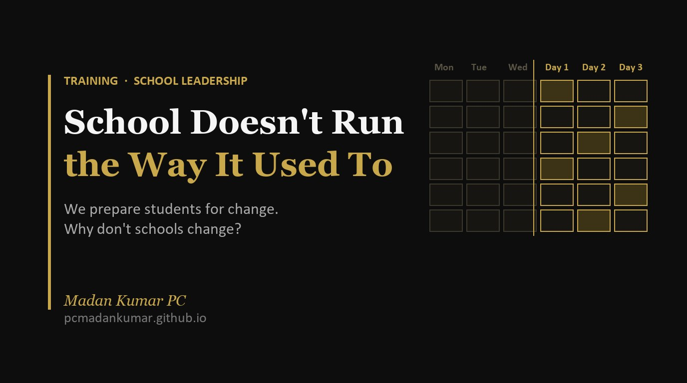

School Doesn't Run the Way It Used To

We prepare students for change. Why don't schools change?
Here is the irony. We say schools prepare students for life, and life is full of change. Yet the school, the very place meant to prepare them, changes the least.
When schools do change, people usually point to software: the learning management system, the HR portal, the attendance app. Those changes are real. But in some schools I have noticed something quieter and more important. They are changing how they run. The timetable, the classroom, the report card, even the idea of a subject are being redesigned. Much of it is borrowed from college.
Here is what I am seeing, what it gives children, and what it asks of the teachers who make it work.
From Monday to Day 1
In college we had a day order timetable: Day 1 to Day 6, rolling on whatever the weekday. A Tuesday holiday didn’t wipe out Tuesday’s classes for the term. The cycle simply picked up the next morning. Many schools now use the same system.
It sounds like an admin tweak. It isn’t. With day orders, a school can fix one slot, say the Day 4 afternoon, for events: expert talks, career sessions, workshops, club work. Events stop stealing periods from whichever teacher is on the timetable that day, and every section gets the same exposure over the cycle.
I work on timetables myself, and I know how they are usually seen. A timetable feels like a maths problem with two variables: teachers, each meant to carry an adequate number of periods, and students, a fixed number in each section. The best allocation is the one that balances these two perfectly. A timetable maker is appreciated when he or she manages that balance better than anyone else.
Kiran Bir Sethi, founder of Riverside School in Ahmedabad, would say that equation is missing something. She told ACER India that the real magic of redesigning a school lies in timetabling, because “we timetable for subjects – we don’t timetable for relationships, or relevance, or rigour.” Riverside runs on projects and design thinking, using a simple Feel, Imagine, Do, Share framework that has spread to dozens of countries through Design for Change. It shows that how you arrange time shapes what learning is possible. [1, 2, 3]
When a subject comes from outside
The second change surprised me more. Outsourcing robotics, coding or design thinking is old news. What is new is a school handing a core subject, maths or English, to an outside organisation that brings its own teachers, materials and assessments.
Done well, the partner doesn’t just teach. It sends a diagnostic report at the start and progress reports through the year, and these sit alongside the school report card. Educational Initiatives’ Mindspark is a well studied example. Each child starts with a test that finds their actual level, then gets work pitched to that level, even if a Grade 7 child lands on Grade 3 content. [4]
Parents get far richer information about their child. But the school must ask who owns the learning. If the maths teacher on campus becomes a supervisor of someone else’s programme, what happens to that teacher’s growth, and to the link between maths and the rest of the curriculum? The evidence is also less tidy than the brochures. A J-PAL study in Delhi found Mindspark lifted scores on its own tests, but the maths gains did not show up in the children’s school exams. [5]
Students holding the timetable
The third model turns the timetable inside out. One school I came across gives timetables to teachers, not to classes. Say there are two physics teachers. Teacher A starts a unit this week; Teacher B starts the same unit next week. Students choose which session to attend.
Each teacher marks attendance and runs assessments on their own schedule. Over the year a student sits about four physics assessments, choosing between two windows each time. Classrooms belong to subjects, so students walk to the physics room, not the other way round.
It sounds radical, but Finland’s upper secondary schools have worked roughly this way since 1982. There are no year classes. The year is split into periods, each with its own timetable. Students build their own study plan from a course list and complete at least 150 credits in two to four years. Finnish schools are open about the trade: more freedom, and with it real responsibility for their own progress. [6, 7, 8, 9]
Some Indian schools go further: credits alongside grades, electives on topics like AI, and small research projects under a teacher the student picks. Anyone who has been to university will recognise all of it. It also fits NEP 2020, which asks for more subject choice in secondary school and no hard separation between curricular and extracurricular, arts and science, vocational and academic. [10]
Centres of knowledge
Some school leaders now talk about turning their schools into centres of knowledge. Instead of a weekly timetable, a student spends a month or two in one area, and completes three or four such centres a year to earn their grades. In schools this is still an emerging idea rather than a proven one. The closest working model I know is at college level: since 1970, Colorado College has taught one course at a time, in blocks of three and a half weeks. [14]
The appeal is depth: weeks inside one field feel closer to real work. The risk shows up in Colorado College’s own history. Its maths department was the slowest to adjust, because the fast pace left less time to digest material. For schools, that is the warning: subjects needing steady practice, maths and languages especially, can suffer from long gaps. [15]
Older roots
None of this is entirely new. Krishnamurti Foundation schools such as Rishi Valley have long held that school should help a child notice their own thinking, feeling and action, not just pick up skills. The Azim Premji Foundation runs demonstration schools on the same costs and constraints as rural government schools, showing that a school can change how it works without changing how much it spends. Both remind me that how a school runs should follow from what it is for. A new timetable with an old purpose is still an old school. [11, 12]
The part we don’t talk about enough: teachers
Every one of these changes lands on a teacher. And most teachers never experienced any of it as students. The sociologist Dan Lortie called this the apprenticeship of observation. By the time someone becomes a teacher, they have spent around 13,000 hours watching teachers, and that shapes their teaching more than any training course. Put simply, teachers tend to teach the way they were taught. [13]
So when a school asks a high school teacher to make every class activity based, the honest reply I hear is: “Then how do I finish the portion?” That isn’t resistance. It’s arithmetic: few periods, a long syllabus, board exams at the end. A student led timetable needs teachers who track who attended what, run repeat assessments and keep pace with two batches at once. A day order needs coordinators who plan events across a cycle. An outsourced subject needs teachers comfortable sharing their own classroom. Many of today’s teachers never saw these things in school, and some never saw them in college either.
The teacher who is everything
There is a pattern here. When I began attending PD sessions some 10 or 12 years ago, a trainer told me, “Every teacher is also an English teacher.” A few years later the line became, “Every teacher is a counsellor, especially a career counsellor.” As always, every teacher is expected to keep discipline, not just in the class but across the whole school. Every teacher is also a wellbeing teacher. Even if he or she is not the school’s wellbeing lead, they must watch out for every student they teach or walk past.
Now, all of a sudden, teachers have become data gatherers and data analysts too, partly because the learning platforms and portals I mentioned at the start need someone to feed them. In some schools the job goes beyond data, beyond counselling, beyond teaching. Teachers are expected to stay in touch with parents not only at parent teacher meetings but over email and WhatsApp. Some even act as marketing staff. In one large chain I know, with 20 or 30 schools under its name, a teacher had to keep checking the head branch’s results, write to the head office for the figures, and use them to market their own branch.
Every one of these roles arrived with good intentions. But whenever a school changes, one way or another, the teacher’s workload goes up, and almost nothing comes off. Maybe that has to change too.
How long will your model work?
None of this is an argument against change. It is an argument for changing how we change.
Some schools will read all this and say: we are fine as we are. Our students get good marks. They get exposure. Parents are happy. Why change?
My question back is simple. How long do you think this model will work?
A leader who believes her model is safe for a lifetime is mistaken. A new school opens down the road with day orders and AI electives. Parents ask why their child has one physics schedule when a cousin elsewhere picks from two. A board changes its assessment rules. The curve balls keep coming, from other schools, from parents, from policy.
Change is the one thing life keeps handing us. That is the irony I began with: the place that prepares children for a changing world is often the slowest to change itself.
A school that refuses to change even a little, or won’t even think about it, will slowly become obsolete. Good results today are no guarantee for tomorrow.
Where I land
Adapting doesn’t mean every school should adopt every model. Some suit a 400 student school and would buckle at 4,000. Some need rooms, staff and systems most schools lack. But the shape of a school day is no longer fixed. Schools that rethink it carefully can offer children more choice, more depth and more contact with the real world.
But the redesign has to start with teachers, not timetables. Give them time to see these models working, to try one change at a time, and to say honestly what breaks. Otherwise we end up with college style structures run by people who have only ever known the bell and the register.
If your school has changed the way it runs, I’d like to hear what it took from your teachers to make it work. Find me on LinkedIn and tell me.
References
- ACER India / Teacher Magazine. Kiran Bir Sethi on a student-centred curriculum. https://www.teachermagazine.com/in_en/articles/video-kiran-bir-sethi-on-a-student-centred-curriculum
- Edutopia. Empowering Students With Design Thinking (Riverside School, Ahmedabad). https://www.edutopia.org/video/empowering-students-design-thinking/
- Qimpro Gold Standard 2017 citation, Kiran Bir Sethi (FIDS framework, Design for Change). https://www.qimpro.org/awards/citation/115
- Educational Initiatives. Impact of Mindspark’s Adaptive Logic on Student Learning. https://ei.study/?p=11341
- J-PAL. Disrupting Education? Evidence on Technology-Aided Instruction in India. https://www.povertyactionlab.org/evaluation/disrupting-education-evidence-technology-aided-instruction-india
- Eurydice. Teaching and learning in general upper secondary education, Finland. https://eurydice.eacea.ec.europa.eu/eurypedia/finland/teaching-and-learning-general-upper-secondary-education
- City of Oulu. Upper Secondary School Studies. https://www.ouka.fi/en/upper-secondary-school-studies
- EMS national presentation, Finland (course-based upper secondary since 1982). https://emis.univie.ac.at/data/projects/reference-levels/EMS_FINLAND.pdf
- Tornio. Tornion yhteislyseo upper secondary school. https://www.tornio.fi/?p=28115
- Government of India (PIB via PM India). Cabinet approves National Education Policy 2020. https://www.pmindia.gov.in/en/news_updates/cabinet-approves-national-education-policy-2020-paving-way-for-transformational-reforms-in-school-and-higher-education-systems-in-the-country/
- J. Krishnamurti. Krishnamurti on Education (talks at Rishi Valley and Rajghat). https://booksmandala.com/books/on-education-29177
- Azim Premji Foundation. Field Institutes and Schools. https://azimpremjifoundation.org/node/87
- Encyclopedia.pub. The Apprenticeship of Observation in Teacher Learning (on Lortie, 1975). https://encyclopedia.pub/entry/history/show/132778
- Colorado College. About the Block Plan. https://www.coloradocollege.edu/
- Colorado College Mathematics Department. Academic Block Plan (department history). https://www.coloradocollege.edu/academics/dept/mathcs/dept-history/topics/block.html
Numbers in square brackets in the text point to the references above.